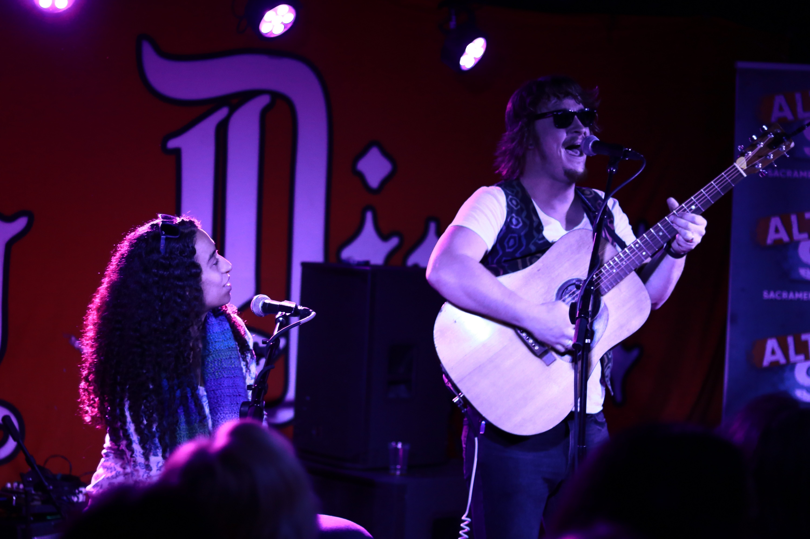
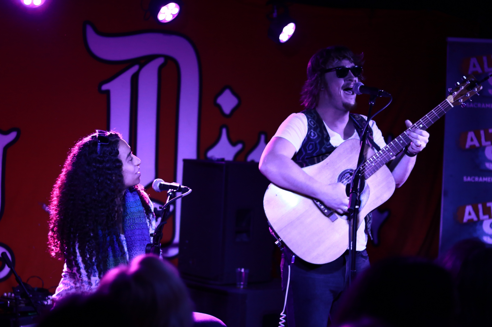
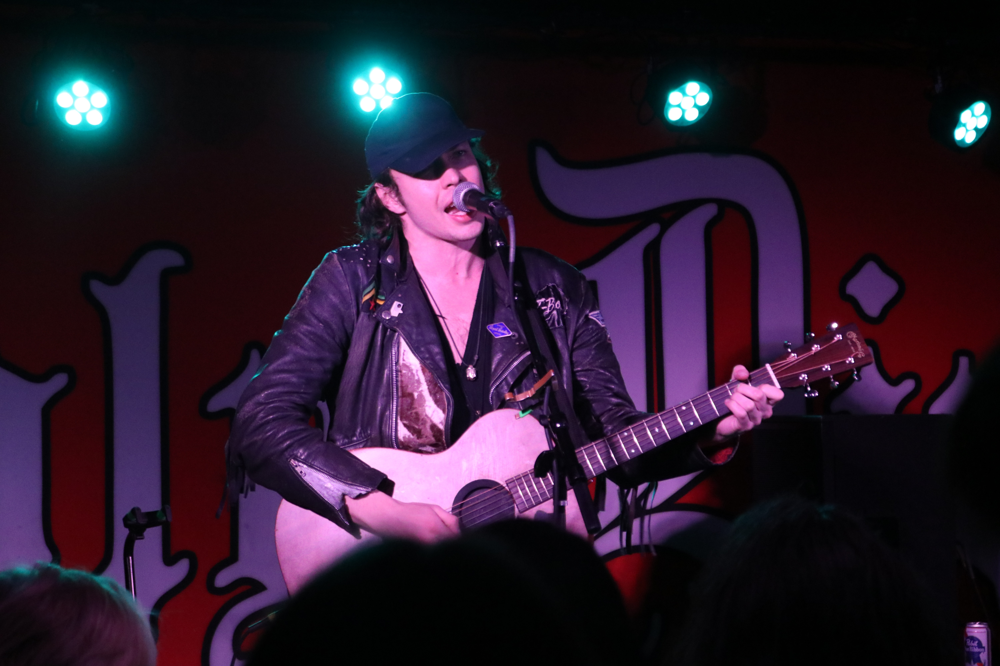
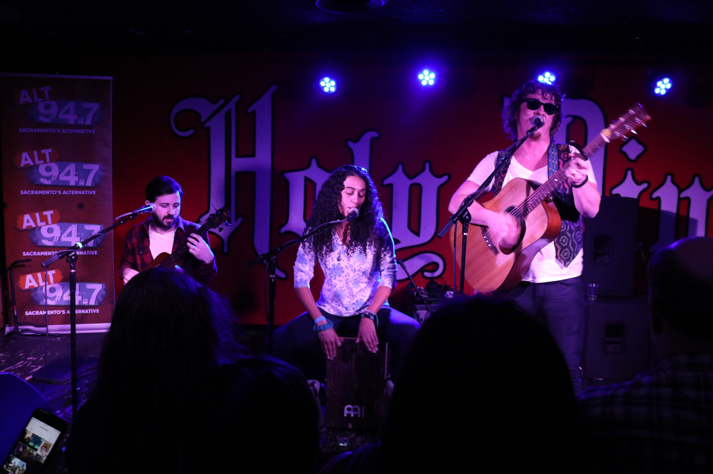
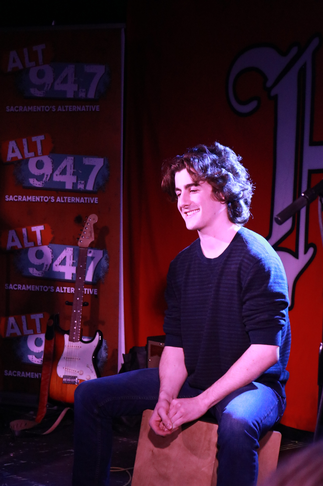
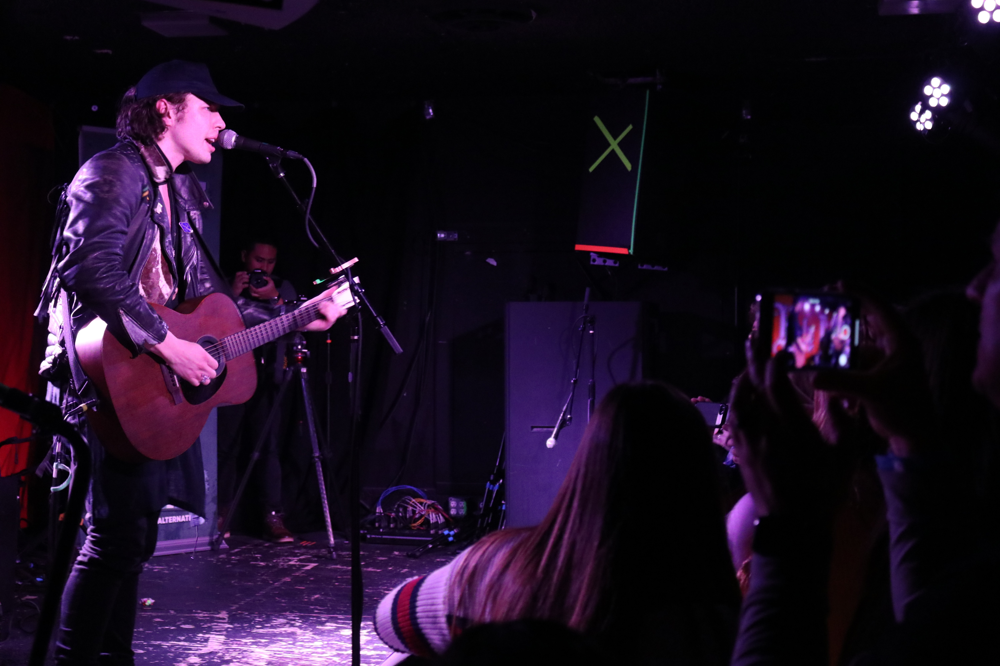
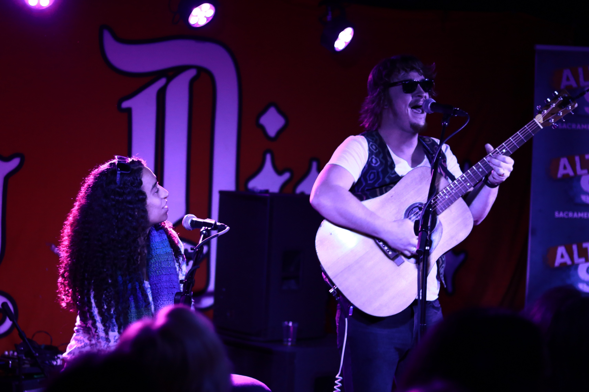

Music Discovery
 






Music discovery is a small music festival where rising artists in alternative rock come to Sacramento to perform their latest music. Before the show began, I had to position cameras around the stage to record each performance of the festival. During the festival, I had to photograph performances by the band “Me and You” and rock artists, Barnes Courtney. I also had to capture phots of the audience interacting with the artists and their reactions meeting them.